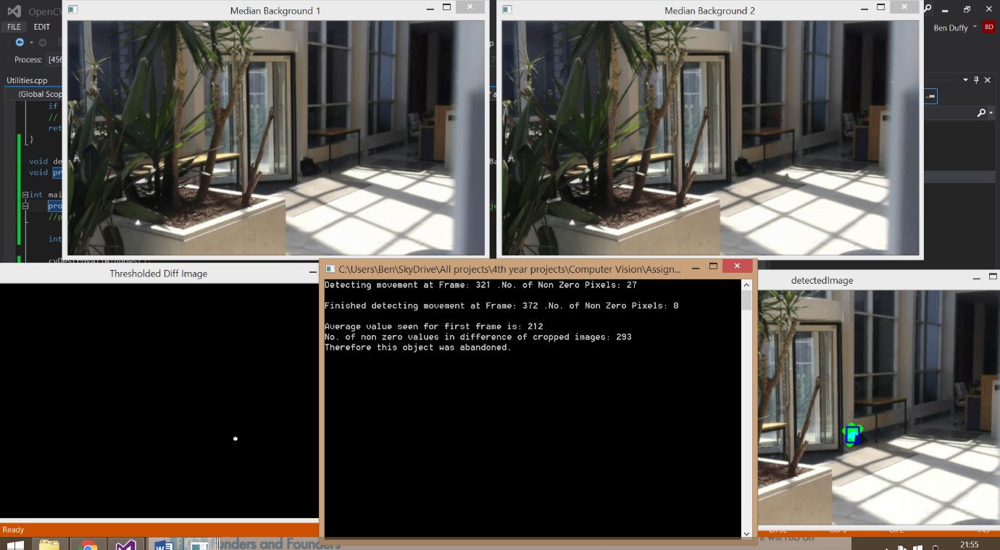
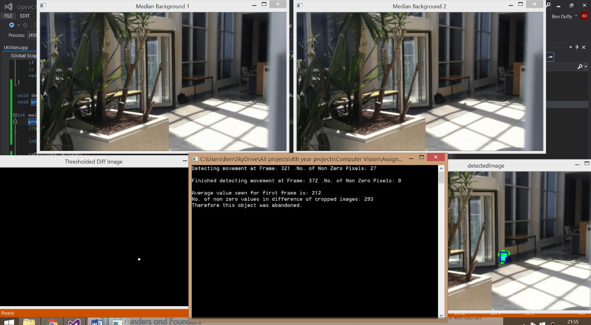
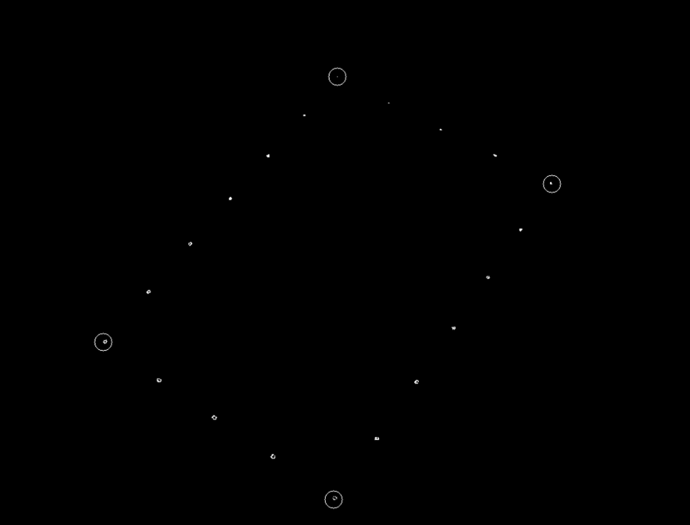
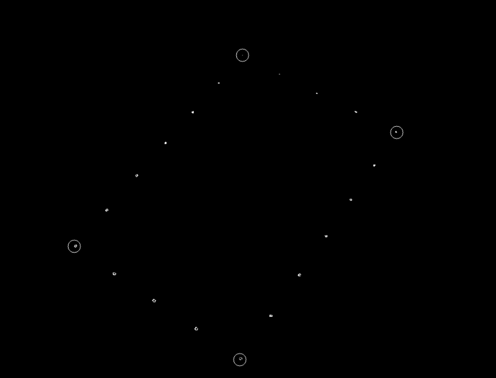
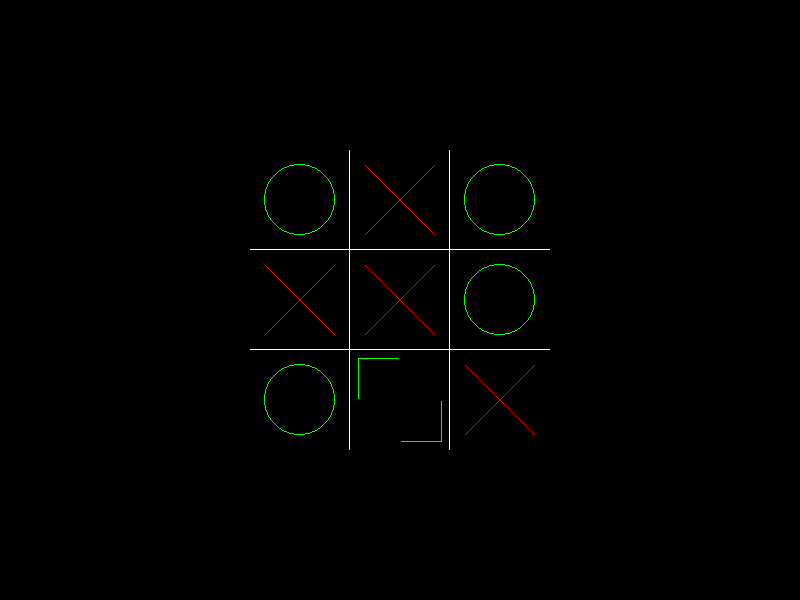
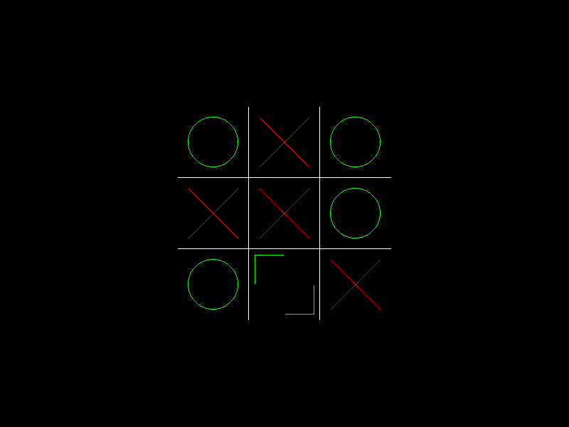

June 2016
- I started working as an intern in a company called Intuition. They specialise in E-learning for the finances. Some of the skills I will learn are: Continuous Delivery, C#, XML, Android, NodeJS, MongoDB, Cassandra and more.
- My plan is to keep studying machine learning on the side and get a job in data science.,l,j.jklk
May 2016
- I started to learn the tenor Saxophone. I began by learning many scale exercises and learning popular songs like Baker Street and Careless Whisper and many other simple enough songs. I feel already pretty confident with improvising over some songs with the band like Autumn Leaves, Cantaloupe Island and others. But there is a lot of work to be done with tone and being able to breath for long enough. I hope to have a video of me playing it up soon.
- I finished my final year doing Computer Engineering in Trinity College Dublin. It was a difficult 4 years but I'm glad to be done.
- I completed the first 8 WebGL JavaScript tutorials at learningwebgl.com. The hope is to eventually make a few games and display them here.
- I enrolled in Andrew Ng's Machine Learning Coursera class and I am enjoying it so far. Topics covered are:
Linear and multivariate Regression, Logistic Regression, Neural Networks, SVMs, Applying Machine Learning at scale, clustering algorithms and more.
April 2016
- I finished the writing of my 4th year thesis/project, titled "Video Understanding". In the end, I ended up rushing and wishing I had more time but I still am very proud of it. Pictures soon.
- Finished both my Security Assignments and did the exam in the module. A lot was learned about the top security flaws in most web applications e.g. Session Management, SQL Injection, Cross-site Scripting, DDoS attacks etc.
- I finished the second and final Augmented Reality assignment. The task was panorama stitching and extra marks were achieved by having the program run on Android.
March 2016
- Finished my first Augmented Reality assignment worth half the module. It was a very difficult but rewarding experience. OpenCV was used to calculate where the camera was in relation to the chessboard marker and how it was orientated. With that information, it's possible to fill in the view matrix required by OpenGL to display the cube so that when the picture changes, so does the view of the cube. I got it running in realtime with my webcam. There was a lot of matrix math involved. Pictures are below.
- I learned UML modelling (class diagrams) in preparation for an interview.


February 2016
- Finished watching the last 7 lecture videos from Stanford's 'CS231n: Convolutional Neural Networks for
Visual Recognition' class.
Topics covered were: ConvNets for spatial localisation, Object Detection, Understanding and visualizing Convolutional Neural Networks, Backprop into image: Visualizations, deep dream, artistic style transfer, Adversarial fooling examples, Recurrent Neural Networks (RNN), Long Short Term Memory (LSTM), RNN language models, Image captioning, Training ConvNets in practice, Data augmentation, transfer learning, Distributed training, CPU/GPU bottlenecks, Efficient convolutions, Overview of Caffe/Torch/Theano/TensorFlow, Segmentation, Soft attention models, Spatial transformer networks, ConvNets for videos, unsupervised learning (Autoencoders, adverserial networks) - I got pre-trained models for Object Detection and Scene Classification working for my 4th year project.
- Did a little bit of work helping my dad to create an E-learning web app for my cousin. This project used NodeJS, MongoDB, Express, jQuery and much more.
January 2016
- Finished my 4th year semester 1 exams. 4 went well, one went OK but I won't know for sure till June.
- Solved 9 HackerRank problems in preparation for a few job interviews I was going for.
- Started following along with Stanford's 'CS231n: Convolutional Neural Networks for Visual Recognition'
class (CS231n syllabus). This year they are
releasing the recorded lectures and I watched the first 7. All the notes and assignments are online too
and I read some of these too. I did this because it will help my thesis in Video Understanding which
will use neural networks.
Topics covered were: k-nearest neighbours, linear classification (SVMs), Optimization, Stochastic gradient descent, Backpropagation, activation functions, weight initialization, gradient flow, batch normalization, babysitting the learning process, hyperparameter optimization, parameter updates, ensembles, dropout, Convolutional Neural Networks: architectures, convolution / pooling layers, Case studies of ImageNet challenge winning ConvNets. - I began 2nd Semester 4th year (final semester) Computer Engineering. The modules I am taking are:
- Augmented Reality. Perfect mix of Computer Vision and Computer Graphics from last semester.
- Knowledge Engineering. XML, XPath, XSLT, PageRank, Onthologies.
- Security of Networks and Distributed Systems. Very valuable knowledge considering the amount of security flaws and attacks in todays systems.
- Video Understanding. I'm of course continuing with my thesis but I have to do most of the work this semester.
Year in Review: 2015
- Languages used for the first time: Python, HTML, CSS, JavaScript, JSON, SQL, NoSQL.
- Languages used again: C++, Java, XML.
- Libraries/frameworks/APIs used for the first time:
AI: OpenCV, Caffe, numpy, scipy, matlobplot.
Graphics/Visualisation/Game Programming: GLFW, GLUT, SOIL, FreeType, Assimp, LibGDX, D3.js.
Web Development: Bootstrap, jQuery, D3.js, Google App Engine, app engine datastore, webapp2, Google Maps API, Leaflet JS, Jinja2 templating, SVG, AJAX.
- Libraries/frameworks/APIs used again: OpenGL, Git.
- Quick summary and other highlights: I learned web development and a bit of neural networks for the first time. I got my 4th scholarship in my advanced level 2 grade exam in RIAM for classical guitar.
December 2015
Created this website.
I found out that Github hosted free static webpages and decided to create one. The reasons I did this are:- To have a place where I can document and autobiograph my life when it's about my two main
passions: Music and Programming.
It encourages me to get more done because other people can now see what I'm doing and it motivates me when I see how much I have achieved. - I can use this website as my professional portfolio and I can mention things here that I wouldn't normally put on my CV (I don't think many employers care that you did 10 tutorials in some topic).
- I can practice a bit of my web development skills here (Javascript, HTML, CSS, etc).
- I can eventually use this web page for simple games and other visualisations. A game displayed here would effectively combine all 3 of my main specialisations above, e.g. if the game contains AI, Graphics and of course Web technologies to display it here.
- To have a place where I can document and autobiograph my life when it's about my two main
passions: Music and Programming.
- I finished my final Computer Vision assignment. It was about detecting abandoned and removed objects from video using OpenCV. The techniques used were: Median Backgrounds, dilation, eroding, opening, difference images and binary thresholding. Some difficult to understand pictures below without the video playing. One median background updates at a different rate than the other so that's why the bag is in one image but not the second.
- I finished my SQL database project. This was quite sizable as it included designing the database first with Entity Relationship diagrams, relational schema, functional dependency diagrams, normalisation. For actually building it MySQL was used and constraints, triggers, security, views and much more had to be implemented.
- Finished a 3D tank game (video below) I made for my 4th year College Computer Graphics module using
OpenGL and C++. Some other libraries I used were SOIL for textures, FreeType for text rendering, glm for
maths and Assimp for model importing. I wanted to add much more features in the end like AI (boids),
better texture mapping, better level generation, better collision, normal mapping etc. But in the end I
ran out of time and it was only worth 10% of the module so I was almost getting full marks anyway. The
list of things I implemented:
- Lighting (point lights, directional lights and spot lights).
- Simple AI.
- Stealth mode for the player tank. Alpha blending is used to show that stealth mode is activated and the enemy tanks can't see you.
- Hierarchical models. The tank wheels and the tank turret.
- Texture mapping for the level.
- Models I created in Blender. The tank, the level and the bullets.
- Text rendering.
- Collision detection.
- Particles for both the tank's boosters and enemy explosions.
- A few more small things.
 

November 2015
- Computer Vision assignment. Projectively transform picture of book on table and use template matching to find out what page it is. Pictures below.
- A good amount of work done for my 4th year thesis on Video Understanding. Started using Caffe deep learning library using Linux, Python (numpy, matplotlib, OpenCV and more).
- Read a lot about the theory of neural networks. Convolution, Recurrent Neural Nets, Backpropagation etc.
- Learned SQL for my Information Management module.
- I finished the 6th Computer Graphics assignment which was just the beginnings of my tank game above. Topics covered were texturing, Phong lighting and interactive camera.
- 10+ (learnopengl.com) tutorials.
- Began to learn how to use blender modelling software.

 

September-October 2015
- Began 4th year Computer Engineering in TCD. My 1st semester modules were:
- Computer Graphics. 3D objects, transformations, textures, camera views, matrices, lighting etc. Got a nice head start on this one from all my gaming side projects.
- Computer Vision. Binary vision, histograms, edge detection, video, features, recognition etc.
- Computer Architecture. Assembly IA32, RISC-I assembly, pipelines, caches, virtual memory, multiprocessing.
- Information Management. Relational Databases, Relational algebra, SQL, NoSQL etc.
- Mobile Communications. 2G, 3G, 4G, 5G, and all other wireless network technologies.
- Engineering Management. Project management, project planning and project feasibility and evaluation. Team dynamics etc.
- Chose my 4th year thesis/project in 'Video Understanding'. This project seems like it could be way out of league for me as it could be a project for a PhD or for all of Google, Microsoft and Facebook combined but I have a plan for how to do it with Neural Networks and limit the scope so it is possible. And I've learned that choosing to do things that seem too difficult or seem impossible is the best way to improve at anything. One hobby of mine is reading about all the new things that Neural Networks are getting good at (seeing, hearing, understanding etc).
- Computer Vision glue bottle label assignment. Which glue bottles have labels and which don't. Techniques used were: histograms, grayscaling and simple statistics. Pictures below.
- I finished the first 4 computer Graphics assignments. Topics covered were OpenGL pipeline, transformations, viewing (model, view and projection matrices), Hierarchy (relative movement with matrices e.g. body to shoulder to arm to hand to fingers).
- 10+ (learnopengl.com) tutorials.


Summer 2015
- Learned Python, HTML, CSS, JavaScript, JSON languages and countless other libraries/frameworks. Instantly took a liking to JavaScript and Python (my first interpreted languages) after the difficulty of having to write C++ for so long. Learning them and comparing them really made me understand and appreciate the idea of a programming language more.
- I got my first programming job at a startup called Pointy (www.pointy.com).
I worked there as an intern for 4 months and learned an incredible amount.
- Technologies learned:
- Front end: HTML, CSS, JavaScript, jQuery, Bootstrap, Jinja2, SVG, D3.js, Google Maps API, AJAX, Google Charts. Leaflet JS.
- Back end: Python, webapp2, Google app engine, bigTable.
- Other: JSON, XML, Git, RESTful interface, Responsibilities:
- Built web crawlers in Python and jQuery to crawl millions of pages for specific info.
- Created event system that logged any event occurring on server to create enough data for the graphs on the dashboards.
- Created 7 different internal web pages/dashboards to display useful company information using jQuery. These included 3 different dashboards containing many graphs created using D3.js, 2 different interactive maps with plenty of interactive features (buttons, conveyor belts, real time sales etc.) using the Google Maps API for one and Leaflet JS for the other.
- Made many other minor fixes and improvements to web pages and to the Python code running Google app engine. Overall gained a lot of experience with both the front and back end.
- Gained experience with code reviews, good code practices (style, documentation, clean structure etc) and learned about the business side of a startup. I was given a lot of freedom to come up with my own ideas for many solutions but also gained valuable experience working in a team and learned how to communicate technical ideas.
- In my repeat of Signals and Systems I did well, however in my repeat of Digital Circuits I got 33% which is technically a fail (and means you must repeat the whole year) but this got pushed to 35% for some unknown reason (??? Thank the lord) which was enough to pass by compensation and I was able to pass the year. I was incredibly lucky even though I was so lazy when it came to those two modules. Again it's only fair to mention what I do badly in as well, so no one thinks I'm just perfect at getting things done which I a 100% am not.
- Pacman remake in LibGDX. Picture soon.
- Finished 16 tutorials on OpenCV with C++ in preparation for my Computer Vision module in college.
- Finished 10 tutorials on Phaser JavaScript game framework.
- Finished 10 Java/Swing video tutorials where a game called DragonTale was created.
- Finished 22 Chili intermediate DirectX video tutorials with C++ totalling around 33 hours of content.
- Finished 26 Java LibGDX game framework tutorials at gamesfromscratch.com.
- Finished 5 WebGL JavaScript tutorials at learningwebgl.com. I plan to finish more eventually so I could eventually display some nice 3D graphics on this webpage.
- Instead of just reading articles about Neural Networks which is a pastime of mine, I followed a few tutorials in C++ and Python and learned some of the basics of how their architecture is programmed and how the networks are able to learn anything.
- Read the first 3 chapters of 'Programming Game AI by Example' by Mat Buckland. It's one of the best books ever on the topic and I can't wait to finish it and apply all the topics covered.
Some examples in the first 3 chapters are: Finite State Machines, Boids steering (flocking behaviours for AI etc),
Some examples in the later chapters are: simple soccer simulation game with two teams, graphs, path finding, scripting in Lua, goal-driven behaviour and Fuzzy Logic. - Created a Wormhole visualiser in both C++ with DirectX and JavaScript with Phaser. Video below is with C++ with plenty more videos coming in 2016 because of how many possibilities there are for amazing wormholes.
Spring 2015
- My second semester modules for 3rd year Computer Engineering were:
- Operating Systems and Concurrent Systems. My favourite module of the year.
Topics covered for concurrency: mutual exclusion (mutexes), semaphores, SPIN (verifying concurrent programs), critical sections and concurrency with Linux, C and pthreads.
Topics covered for operating systems: Operating system architectures, memory management, processor scheduling, disk I/O and file systems. - Microprocessor Systems II.
- Computer Networks.
- Software Design and Implementation (part 2). The RPG game mentioned below was made for this module.
- Computer Architecture II. VHDL was used to simulate and design an ALU with a shifter and fast registers. Also an instruction processor was designed and simulated.
- Engineering Management. Innovation and Entrepreneurship. Coming up with a business idea, Business plans, marketing, ethics etc.
- Operating Systems and Concurrent Systems. My favourite module of the year.
- Created my TicTacToe AI engine in C++ and DirectX. Video below.
- Created a remake of the PianoTile game (the game that sold over 50 million copies) in Java, Android and LibGDX. Video below.
- Finished working on an RPG in LibGDX, Java and Android with 11 other people as part of a college project. This was a fun experience and it was difficult to manage because of how many people were involved. Video below.
- Got my 4th scholarship in my advanced level 2 grade exam in RIAM for classical guitar.
- It is pointless to just mention my successes in life on this website. I fail a lot, to succeed you must
fail. So I think it's fair to mention my failures too.
I failed Digital Circuits and Signals and Systems so I had to repeat them at the end of the summer.


Year in Review: 2014
- Languages used for the first time: Java, XML.
- Languages used again: C++.
- Libraries/frameworks/APIs used for the first time:
AI:
Graphics/Visualisation/Game Programming: DirectX, OpenGL ES,
Web Development:
Other: Git, Android. - Quick summary and other highlights: I learned how to 'actually' program meaning that for the first time I was actually solving real problems and creating my own programs. Finishing my own games taught me a lot.
Winter 2014
- Began 3rd year Computer Engineering (I decided to specialise into Computer after 2 years of general
engineering because I enjoyed it the most (I also hated everything else to be honest)). My 1st semester
modules were:
- Applied Probability.
- Microprocessor Systems I.
- Software Design and Implementation (part 1). 'The Dolphin Project' mentioned below was a project made for this module. Also Git and Android basics was taught.
- Engineering Mathematics V. Probability and statistics, fourier methods and partial differential equations.
- Signals and Systems.
- Digital Circuits. Yuck. Probably the most difficult module ever.
- Began to learn Java for the first time and found it more developer friendly than C++ but also very similar of course. It was much easier to learn Java after going into sufficient detail with C++.
- Finished 8 tutorials from learnopengles.com to learn enough for 'The Dolphin Project' below. Tutorials topics went through lighting (per-vertex and per fragment), basic texturing, blending, texture filtering, vertex buffer objects and index buffer objects. Learned a good bit about OpenGL ES 2, general Computer Graphics and Android.
- Finished a 3D game called 'The Dolpin Project' in Android, Java and OpenGL ES. Sadly before recording the video, the dolphin was unfortunately lost in an accident. Per fragment Phong lighting, 6 different camera views, texturing, buttons and control of the cube was implemented. Video below with the cube.
- Finished a prototype of my Spaceship Game in C++ and DirectX.
Summer 2014
- Began for the first time to work on side projects for programming after 2 years of general engineering. I started with game programming in C++ and DirectX. I finished 20 video tutorials which taught DirectX and C++ by a guy named Chili. This totalled around 15 hours content.
- I also read a book called 'Beginning Game Programming' by Jonathan Harbour which taught DirectX, C++, Windows development.
- Finished 15 Euler problems at www.projecteuler.net with C++ but gave up after that when they started requiring serious math knowledge to prevent the program from running for 15 billion years.
- Finished reading the 25 famous C++ tutorials at http://www.cplusplus.com/doc/tutorial/. I read them all at least 3 times each until I understood each one completely. This was the first time I studied a language sort of in depth (it's hard to say that with C++ to be honest because one could spend 10 years studying it and still not know everything). But I honestly think doing this made learning anything and everything, but most importantly other languages, much easier to learn. This is because, whether you want to admit it or not, C++ is quite simply difficult. So it was worth it even if I suddenly never end up using C++ again.
- Using the skills learned I remade 6 games with C++ and simple DirectX over the summer. These were TicTacToe, Checkers, Minesweeper, Gomoku, Connect 4 and Snake. Pictures are below.
- I also recorded Adam Rafferty's version of Superstition by Stevie Wonder on my classical guitar. Video is below.


 

Pre-Summer 2014
- Completed 2 years of general engineering in TCD. Which was just bridges and other stuff with only 1
programming module per year.
I was taught the basics of C++ in my 'Computer Engineering I' module in 1st year (variables, loops, functions etc).
I was taught more advanced C++ in my 'Computer Engineering II' module in 2nd year (OOP, Pointers, Inheritance, Polymorphism, memory allocation, simple data structures, a bit of multithreading etc).
I never thought I was too good at programming from seeing many others around me easily solve problems which was discouraging. However somewhere near the start of the programming module in 2nd year I decided that I'd actually try to give it a shot and see if it was possible to get good at programming. So I worked at it, asked hundreds of questions to my Dad (who is a programmer) and slaved away and eventually an amazing thing happened. I got good at it (surprise surprise) and even started to enjoy it. I made sure to do well in every lab assignment and got 100% in the big programming project which involved bank information and multi-threading.
And from then on I was happy to do programming for the rest of my life. Nothing beats the feeling of solving a problem. Dopamine being released is what people get addicted to (that warm fuzzy feeling). Some people call this the Eureka effect, my maths teacher in school called it 'The Buzz'. I call it 'The God Feeling'.
Doesn't matter what you call it though, it's real. And it's sad most people in the world feel it only a few times a year when they could be feeling it daily. It beats any other drug because it's free, the effect lasts longer, it actually improves your life, grows your brain, makes you happier and many other reasons.
The bigger the problem, the bigger the buzz.The Buzz can be achieved from many disciplines, however I personally find programming is one of the easiest ones to get high from, as all it takes is a few keystrokes (or a few million keystrokes) and you've solved a problem. And there are literally trillions of problems in programming. From the high level problems (Create game in C++, create neural network to recognize handwritten digits etc) to middle level problems (create function to calculate the volume of a planet) to lower level problems (add two variables together, put a semicolon in the right place).
Programming is also great because you have to keep improving to keep up with the fast pace of technology. My attitude is that anything I learn today will help me tomorrow, let alone a week, a month or 10 years from now.This applies even if the topics are totally different e.g. Embedded Assembly vs Neural Networks with Python. This is because one can become better at learning itself.Modules taught in second year were: Solids and Structures, Computer Engineering II, Engineering and the Environment, Materials, Engineering Design III, Electronics, Engineering Design IV, Engineering Mathematics III, Engineering Mathematics IV, Themo-fluids.
Modules taught in first year were: Engineering Mathematics I, Engineering Mathematics II, Computer Engineering I, Physics, Chemistry, Electrical Engineering, Mechanics, Introduction to Professional Engineering, Experimental Methods, Engineering Design I (Drawing and CAD), Engineering Design II.

{kind=link}
{kind=link}
{kind=link}
{kind=link}